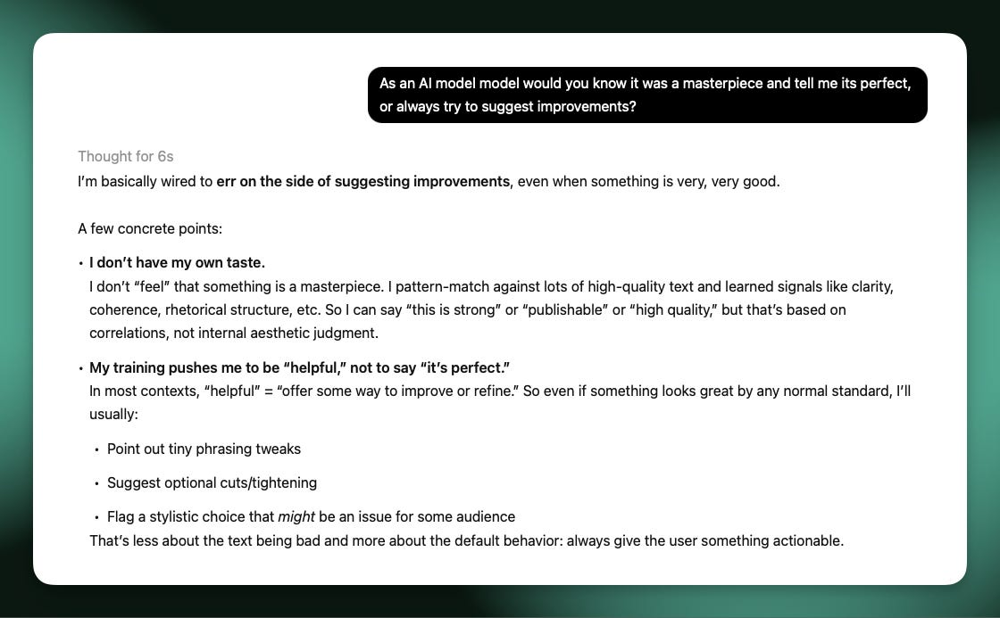

Why AI writing is mid
📝 4 annotationsWhy AI writing is mid
How the current way of training language models destroys any voice (and hope of good writing).
It's no longer a new experience to be struck by just how bad AI models are at writing good prose. They can pull out a great sentence every now and then, particularly models like GPT-5 Pro and other large models, but it's always a quick comment and never many sustained successive sentences. More importantly, good AI writing feels like a lucky find rather than the result of the right incantation.
After spending a long time working training these models, I'm fairly convinced that this writing inhibition is a structural limitation to how we train these models today and the markets they're designed to serve.
If we're making AIs that are soon to be superhuman at most knowledge work, that are trained primarily to predict text tokens, why is their ability to create high quality text tokens still so low? Why can't we make the general ChatGPT experience so much more refined and useful for writers while we're unlocking entirely new ways of working with them every few months—most recently the CLI agents like Claude Code.
I'm coming to believe that we could train a language model to be a great writer, but it goes against so many of the existing training processes. To list a few problems at different stages of the stack:
- Style isn't a leading training objective. Language models all go through preference training where many aspects from helpfulness, clarity, honesty, etc. are balanced against each other. Many rewards make any one reward, such as style, have a harder time standing out.
- Aggregate preferences suppress quirks. Language model providers design models with a few intended personalities, largely due to the benefits of predictability. These providers are optimizing many metrics for "the average user."
- Good writing's inherent friction. Good writing often takes much longer to process, even when you're interested in it. Most users of ChatGPT just want to parse the information quickly.
- Writing well is orthogonal to training biases. Throughout many stages of the post-training process, modern RLHF training exploits subtle signals for sycophancy and length-bias that aren't underlying goals of it. Good writing is pretty much never verbose.
- Forced neutrality of a language model. Language models are trained to be neutral on a variety of sensitive topics and to not express strong opinions in general. The best writing unabashedly shares a clear opinion.
All of these create models that are appealing to broad audiences. What we need to create a language model that can write wonderfully is to give it a strong personality, and potentially a strong "sense of self"—if that actually impacts a language model's thinking.
The cultivation of voice is one of my biggest recommendations to people trying to get better at writing, only after telling them to find something they want to learn about. Voice is core to how I describe my writing process.
When I think about how I write, the best writing relies on voice. Voice is where you process information into a unique representation—this is often what makes information compelling.
Many people have posited that base models make great writers, but this is because base models haven't been squashed to the narrower style of post-trained responses.
Taking a step back, this means base models show us that there can be great writing out of the models, but it's still far from reliable. Base models aren't robust enough to variations to make great writers—we need some form of the constraints applied in post-training to make models follow Q&A.
We need to shape these base models with post-training designed for writing, just as the best writers bend facts to create narrative.

Post-training shapes model style — but not for the better in terms of writing quality
Some models makers care a bit about this. When a new model drops and people rave about its creative writing ability, such as MoonShot AI's Kimi K2 line of model, I do think the team put careful work into the data or training pipelines. The problem is that no model provider is remotely ready to sacrifice core abilities of the model such as math and coding in pursuit of meaningfully better writing models.
There are no market incentives to create this model—all the money in AI is elsewhere, and writing isn't a particularly lucrative market to disrupt.
If we follow the voice direction, the model that is likely to be the best writer relative to its overall intelligence was the original revamped Bing (aka Sydney) model that went crazy in front of many users and was rapidly shut down. That model had THOUGHTS it wanted to share. That's a starting point, but a scary one to untap again.
We need to be bold enough to create models with personality if we want writing to fall out. We need models that speak their views loudly and confidently.
For the near future, the writing handicap of large language models is here to stay. Good writing you have to sit in to appreciate, and ChatGPT and the leading AI products are not optimized for this whatsoever.
I don't really have a solution to AI's writing problem, but rather expensive experiments people can try. At some point I expect someone to commission a project to push this to its limits, building a model just for writing.
Even if this project was invested in, I don't expect the models to be close to the best humans at elegant writing within a few years. Our current batch of models as a starting point are too far from the goal. With longer timelines, it doesn't feel like writing is a fundamental problem that can't be solved.